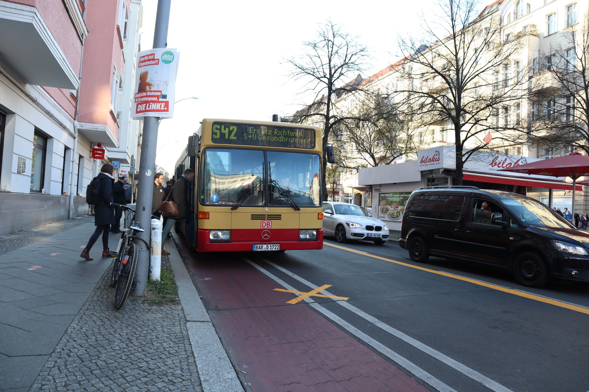

Berliner Breakfast
I wasn’t prepared for Berlin. In fact no one is. No one ever was.
 Image credit: John Sebastian
Image credit: John Sebastian
For many months now, I have had a strange circadian disorder — every morning, I wake up and look at the clock and it reads 6.10 AM, regardless of time zones. Many years ago I’d observed that I couldn’t stay awake beyond 2.15 in the morning. I’d later say all these to my new friends in Vienna and be asked to consult a ‘numerologist’.
The spring was still hungover and sleepy from an unusually cold winter this year. I woke up at 6.10 and couldn’t go back to sleep. Anyway, to sleep is the last thing one would want to do on the first morning of a long expedition.
I left the warm lobby of the Corner Hostel on Driesener Street and walked aimlessly. Joining the flow of brisk walkers, many of them frequently pulling their left palm out from the pocket, quickly gawping at the watch, I walked around a park with curious statues and reached a tram bus station. A bus in classical red and yellow waited for office folk, garbed in winter attire, running sluggishly to the stop. An elderly man on a bicycle, a Centaur-ly frame altogether, rubbed his palms and blew into his fists as he waited for the green to beam.
After a couple of hours observing Berlin’s morning routines, I decided it was time to head back. Trusting the arrow on the back of my head, I walked, expecting to find the park with the exotic statues and the red Vespa. The cold was biting into my ears that I imagined the pinnae had turned brittle, and didn’t want to rub them warm, lest I crush them! I badly needed some tea.
More people were up by now in the hostel, some reading tour brochures with breakfast. One studious guy sat at a corner typing away, occasionally fiddling with his camera. The Korean girl who’d said “you can call me ‘Me’” was at the table near the kitchen door. A huge man walked into the door, bowing. I followed him into the kitchen. He pulled down the hood of his shabby grey sweatshirt and pulled out a bag of meatballs and a can of beer from a brown paper bag. I wrung a vague smile.
“I’m Andhrey”, he said.
“Hi Andre, I’m John”.
“Iovan?”
“Umm, yes”. Strange way to pronounce such a common name, I thought.
We shook hands. It wasn’t just a firm handshake. I could feel my finger bones against each other. But the first thing anyone would notice about him is his teeth, of which none but the two canines are left on the upper jaw. Strikingly conspicuous features of a mutilated, shaggy animal, which seems to yell ‘keep away’. I realised I was talking to a broken man, a hurt beast.
 |
|---|
I loaded the kettle as he shove the meatballs into the oven. He went out. The studious guy let his eyes follow Andre to the door. I went on with the futile search for a bag of tea and sugar. The tea paraphernalia was arranged on a table by a corner in the common area. I sifted through a bunch of packets of blasphemous ‘tea’ flavours — fruit, chamomile, hibiscus… Well, Earl Greys, all of the same shade, were in a separate tray.
And Andre was back, “Iovan, where you from?”
“India. You?”
“I’m Russian. From Ukraine. Many Indian students in Ukraine. Are you student?”
“No, not a student now.”
He went to the kitchen and came back with two plates and sat opposite to me. He pushed one plate — a bun, a few meat balls and sour cream to me. I tried to decline. He seemed happy. He pulled out his phone and seemed to be typing busily. Then he pushed the phone to me. It was a translator application. “My English isn’t good. :)”, he’d typed in. I pulled up the translator app on my phone and soon we were talking.
“I’m going to Spain tonight. Later I’ll come back to Italy”
“That sounds awesome. Are you on vacation?”
“No. I’m trying to find a job. Need to find something that can pay 5000 euros in one go!”
“Oh! Is that even possible?!, I wondered. “So, when are you going back home?”
“I can’t go back. They’ll catch me.”
I didn’t understand. But looking at his face, I thought it was better not to ask. He pushed the phone to me- it was a photo of his five month old baby Miriam, and his wife in his town in Ukraine.
“Don’t you miss them?”
“I do, terribly. But there’s nothing I can do. I’m broke. I need to get them out of the country.”
“But, why can’t you go back?” I typed.
He typed something in Russian. The screen showed, “I killed two people.
I froze.
“They’ll kill me if I go back. Or give me life imprisonment”
I suddenly became aware of my odd sitting position- with the left leg stretched under the table and the right resting on the other lap. I dragged the stretched leg close. It sounded so loud. I became aware of Me’s gaze, who was probably amused by the strange exchange. I resorted to a long sip from my huge tea cup, which in doing so, managed to cover most of my face. Andre seemed to look away, like a person who thinks he is being judged.
One of the most troubling questions I’ve dealt with is how do people come to terms with themselves after they take another’s life, knowingly or unknowingly. There are sayings in many cultures that paraphrase to “the sin of killing is forgiven in eating” and seems to justify dining on meat. It even sounds like an ethical justification suited to anthropophagus communities. A dear friend who’d accidentally hit a stray kitten took him to the vet and made him his pet in reparation. When it is so troubling even with animals, how could one forgive himself for hurting another human?
Andre pushed the phone to me once again- “they hurt my wife and kid. I couldn’t do anything else at that moment”. He pulled up his sleeves. Long scratch marks all over his elaborate tattoos on both arms. Then pointed to his toothless jaw. “They did this”.
I felt sorry for him. There I was talking to a victim of war crimes, fleeing his homeland fearing for his life, cut off from the family. The stories are real, I remember thinking, that these happen still, in this century.
After a long moment, I gathered enough breath and voice to ask, “What next?”
“Going to finish a job in Spain.”
“What’s your job?”
“Sniper specialist”, the screen read.
He showed me a photo of him and a colleague in military uniforms- him carrying a long sniper barrel, his friend supporting what looked like an RPG on the back of a white Hilux. He was a sniper during the civil war in the Russian speaking provinces of Ukraine.
He sat staring at the empty plate. I gulped down the lukewarm tea left.
“Look at us…. You’re a good man…. So am I…. No problems….Thank you….. for listening”. He said in his broken English and gestures.
“Hope you soon… back with family… Miriam”, I said in mine.
True story.
*name changed.
Published originally on www.storygrapher.org, ©John Sebastian